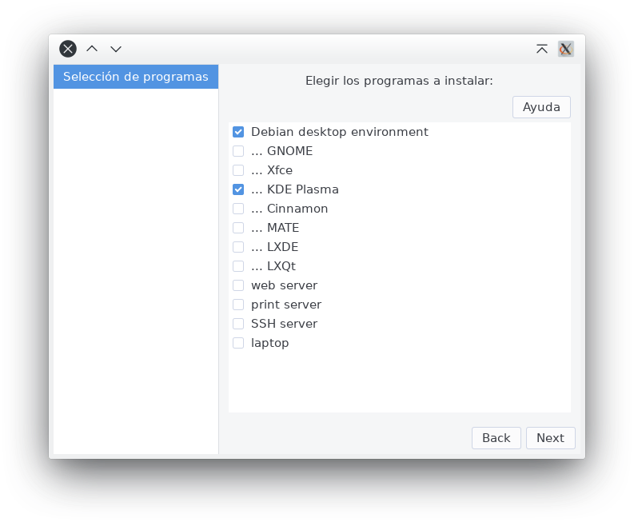
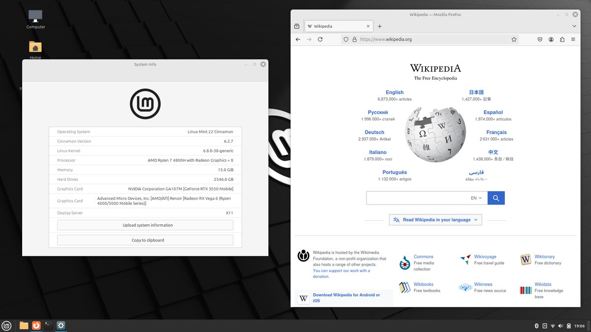
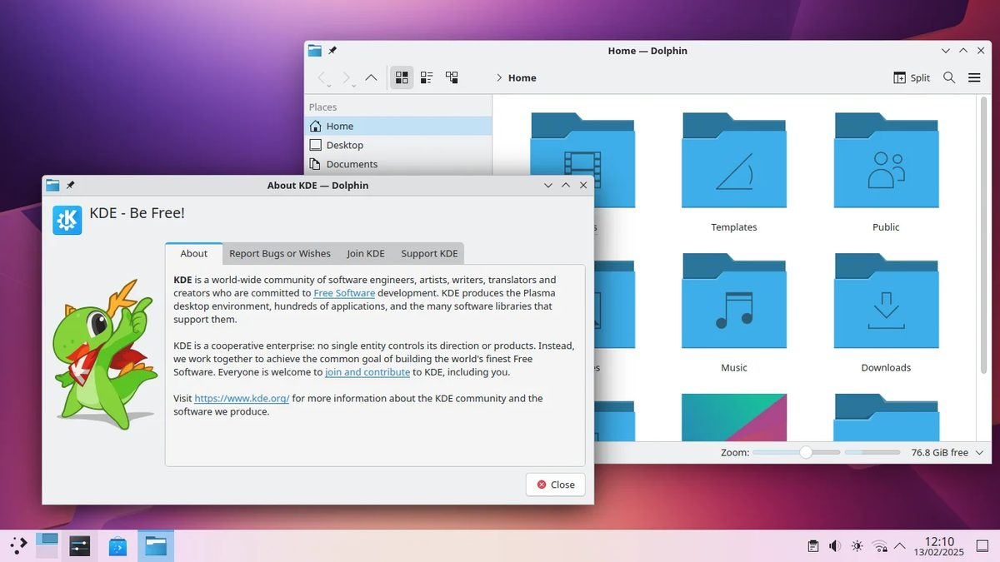
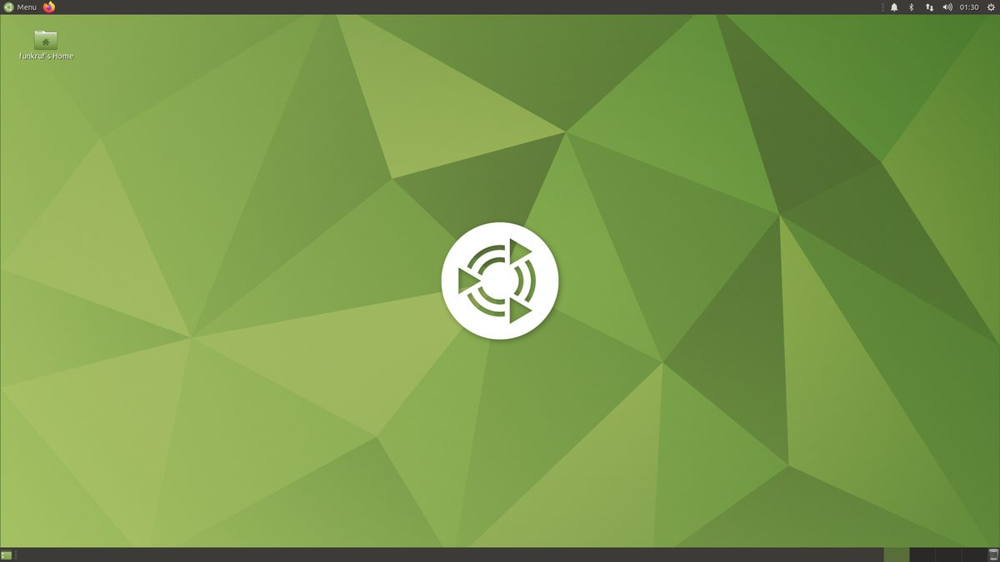
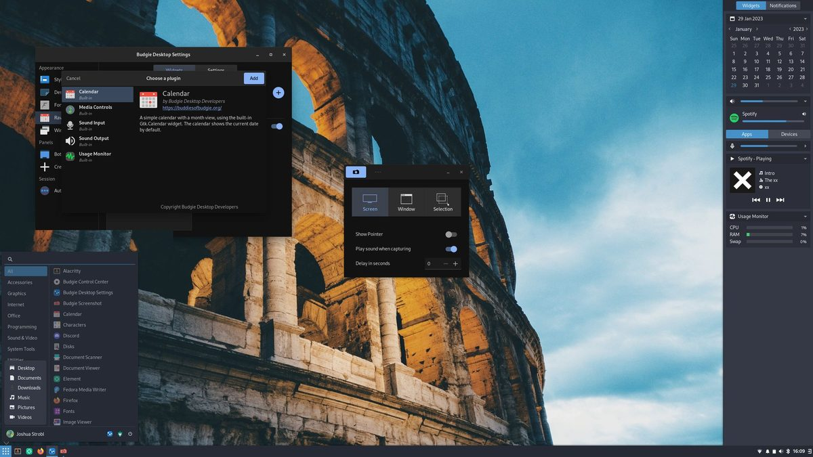
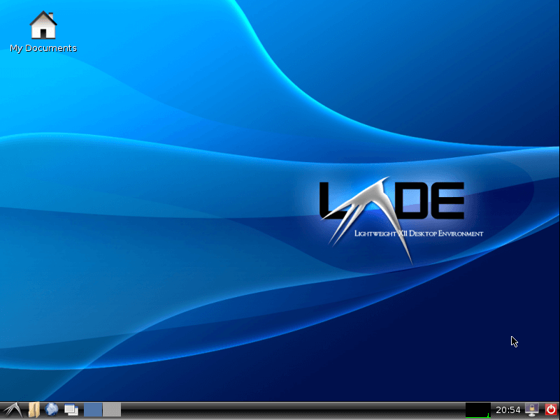
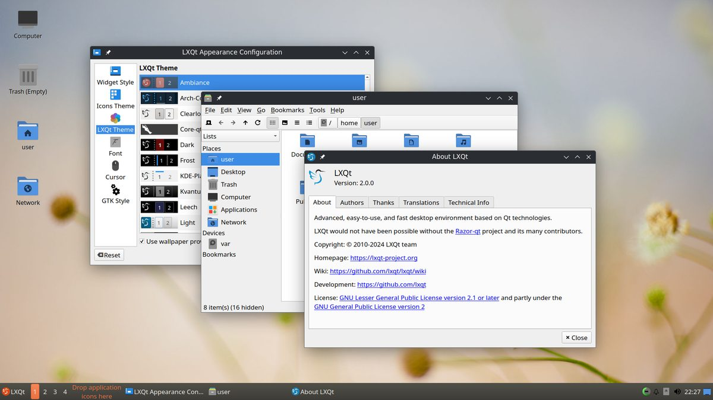
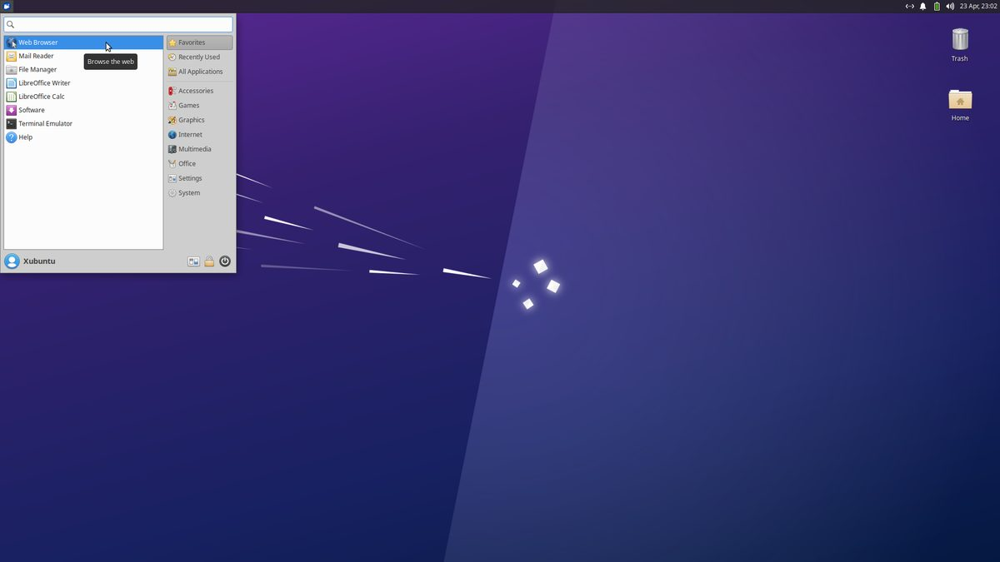

Distribuciones en el centro educativo
En un centro educativo que disponga de sala de ordenadores es importante disponer de una gran variedad de ofertas en programas ya que su uso suele ser muy versátil utilizándose en diferentes asignaturas y niveles educativos. Por eso conviene decantarse por los basados en Debian (uno de los sistemas operativos más escrupulosos en cuanto a seguridad y en la ética de todo lo que utiliza). Dentro de la familia Debian se recomienda Ubuntu o uno de sus derivados, ya que el gran número de usuarios que tiene hace que la oferta de software sea muy amplia y tenga también una gran comunidad que resolverá cualquier tipo de problema. Además Ubuntu y sus versiones derivadas se actualizan cada 6 meses, y cada 2 años hay una versión, llamada LTS (del inglés long term support, soporte a largo plazo), a la que dan soporte (es decir, actualizaciones) durante 5 años. Así pues, sabiendo que el universo Linux es casi inabarcable, lo aconsejable son las versiones LTS de Ubuntu, cuando existan.
Cabe preguntarse por qué no se recomiendan aquí las distribuciones educativas que se han visto en «GNU/Linux y educación». El motivo es práctico: esas distribuciones traen los programas ya elegidos, lo que va muy bien para empezar, pero una distribución general con soporte de larga duración es más fácil de mantener durante los años que un ordenador pasa en un aula, y los programas educativos se instalan en ella igual de bien. Para los equipos que se hayan quedado atrás, en «Dar una segunda vida a los ordenadores» se explica cómo aprovecharlos.
La lista siguiente está ordenada de mayor a menor potencia requerida en los equipos.
- Ubuntu. Requiere ordenadores potentes pero tiene la mayor comunidad de usuarios.
- Linux Mint. Un sistema operativo estable y con un gran número de usuarios.
- Zorin OS. Es muy estable y no suele dar ningún problema. La edición Education viene con programas educativos y facilita instalar Veyon para el control del aula, y está preparada para ordenadores de hasta unos quince años; la edición Core es la versión general. Para los equipos más justos existe además una edición Lite, con el escritorio Xfce, aunque no de la versión educativa; se publica hasta la versión 18, con soporte hasta junio de 2029, y el proyecto no la mantendrá en la 19.
- Debian. Es la distribución madre de casi todas las anteriores y también puede instalarse directamente, eligiendo durante la instalación un escritorio ligero como Xfce. Es la más sobria de la lista y la que menos cambios introduce entre versiones, lo que la hace especialmente cómoda de mantener en un aula.
- Xubuntu. Es una de las versiones oficiales de Ubuntu. Especialmente útil para equipos con poca potencia ya que utiliza el escritorio Xfce.
- Lubuntu. Este es el más ligero de los sabores oficiales de Ubuntu, apto para equipos antiguos o que han sido abandonados porque las versiones actuales de Windows ya no funcionan en ellos. Utiliza el escritorio ligero LXQt.
Conviene comprobar antes si los ordenadores son de 64 bits, algo habitual en cualquier equipo de los últimos quince años, porque todas las distribuciones anteriores ya solo se publican para esa arquitectura: Ubuntu dejó de ofrecer versiones de 32 bits en 2019 y Debian retiró en 2025 el núcleo y el instalador para esos equipos. Si en el centro hay ordenadores más antiguos, siguen existiendo distribuciones que los admiten, como antiX o MX Linux, pensadas precisamente para funcionar con muy pocos recursos. En «Dar una segunda vida a los ordenadores» se trata este caso con más detalle.
![Infografía «Qué instalar según el ordenador», con cuatro columnas. Equipo reciente, con memoria holgada: Ubuntu, Linux Mint o Zorin OS, con los escritorios GNOME, Cinnamon o KDE Plasma. Equipo de unos años, con memoria suficiente: Debian o Linux Mint, con Xfce. Equipo antiguo, justo de memoria: Xubuntu o Lubuntu, con Xfce o LXQt. Equipo muy antiguo, de 32 bits y memoria muy escasa: antiX o MX Linux, con el escritorio que traiga la distribución. Aviso final: antes de instalar conviene probar, porque casi todas estas distribuciones arrancan desde una memoria USB sin tocar el disco, lo que permite comprobar en cada aula que el sonido, la wifi y la impresora funcionan](../content/resources/infografia-que-instalar.jpg "Qué instalar según el ordenador")
Entornos de escritorio
El entorno de escritorio es la interfaz gráfica que el usuario puede ver y con la que interactúa para manejar su ordenador. Así diferentes entornos proporcionan experiencias de usuario muy diferentes. Puede ayudar a entenderlo una analogía con las personas. El aspecto físico de una persona (su altura, musculatura, etc.) sería el hardware, es decir, el equipo informático del que se dispone; el cerebro de esa persona sería el sistema operativo, es decir, es el que toma decisiones y decide cómo actuar en cada momento, y la ropa que lleva sería el entorno de escritorio. Aunque hay que hacer la precisión de que el entorno de escritorio no es solo el aspecto sino también en gran parte la forma de funcionar del ordenador.
Para una persona que desconozca lo que es Linux los entornos de escritorio pueden confundirlo, ya que la misma distribución de Linux con un entorno de escritorio diferente parece un sistema operativo también diferente, aunque sea exactamente el mismo. Y a la inversa, dos distribuciones de Linux totalmente distintas a ojos inexpertos pueden parecer la misma, debido a la utilización del mismo entorno. Esto sorprende porque en Windows y en macOS se ve siempre el mismo aspecto, y solo al comparar la apariencia de épocas distintas, o tras un cambio importante de versión, aparecen diferencias más o menos acusadas.
Muchas de las distribuciones vienen con varios escritorios donde elegir, y lo normal es decidirse según las características del ordenador y los gustos de cada cual. Si se quiere instalar un escritorio que no venga de serie en la distribución, se puede añadir desde la consola de Linux o con herramientas como tasksel.


Hay que aclarar que se pueden tener varios entornos de escritorio instalados y elegir uno u otro durante el arranque: en la misma pantalla en la que se escriben el nombre de usuario y la contraseña se puede cambiar también de escritorio.
A continuación se indican algunos de los entornos de escritorio más habituales. Hay que tener en cuenta, además, que algunas distribuciones modifican el entorno para adaptarlo a su propio estilo.
GNOME
GNOME proporciona un entorno intuitivo y atractivo. Es uno de los escritorios más antiguos y uno de los más utilizados en la actualidad.

Cinnamon
Cinnamon comenzó a ser desarrollado cuando GNOME pasó de la versión 2 a la 3 y cambios dramáticos en su entorno hicieron que una parte de los usuarios quisieran continuidad. Este entorno, junto con MATE, siguió el espíritu del antiguo GNOME 2, aunque ambos son entornos modernos.


KDE Plasma
KDE Plasma ofrece un escritorio altamente configurable, con una interfaz moderna y numerosos efectos visuales. Junto con GNOME es uno de los dos entornos más exigentes con el equipo, así que para ordenadores justos de memoria conviene mirar los ligeros que se describen más abajo.


MATE
MATE es un escritorio que proviene del antiguo GNOME cuando este último tuvo un cambio de aspecto y de funcionamiento muy importante. MATE ha intentado mantener la filosofía del GNOME original.


Budgie
Budgie es un escritorio que utiliza parte de la tecnología de GNOME y pone su énfasis en ser liviano, la elegancia y simplicidad.


LXDE
LXDE fue durante años el escritorio de referencia para los ordenadores más antiguos, porque consume muy pocos recursos. Conviene saber, eso sí, que su desarrollo se detuvo: el equipo que lo creó se volcó en LXQt, que es su continuación, y las distribuciones que lo traían de serie, como Lubuntu, fueron cambiando a ese otro. Sigue funcionando y se encuentra en algunas distribuciones muy ligeras, pero para un equipo antiguo hoy es preferible LXQt o Xfce, que se mantienen al día.


LXQt
LXQt nace de la fusión entre los proyectos LXDE y Razor-Qt. Sigue la filosofía de sus predecesores y es un entorno muy ligero apto para ordenadores con pocos recursos.


Xfce
Xfce. Este escritorio, como los dos anteriores, se utiliza especialmente en equipos de poca capacidad, ya que sus requerimientos de memoria y velocidad son escasos. Aun así es muy configurable y permite un acabado más cuidado, de modo que hay mucha gente que lo prefiere a cualquier otro incluso en equipos potentes y sin problemas de memoria. Es, junto con LXQt, la opción más recomendable para dar salida a los ordenadores antiguos de un centro.

